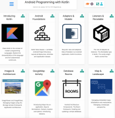
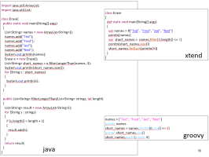
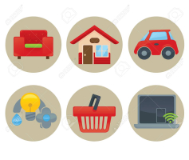
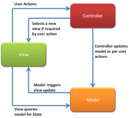
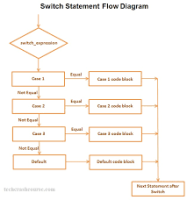
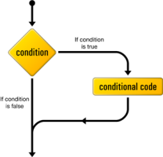
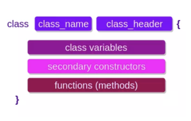
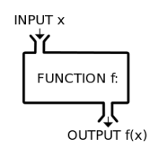
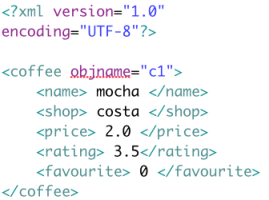

00: Overview
Module Overview
Module Overview
Convergence
Android Overview
Android Overview
Lab-00 Studio
01: Activities
Android Activities
Android Platform, Components & Activities
Android: Foundation
Lab-01 Activities
02: Adapters
Kotlin Fundamentals
Kotlin Structure
Basic Syntax
Kotlin Deep Dive
Android Adapters
Android Application Object
Recycler View + Adapters
Lab-02 Adapters
03: Models
Kotlin Idioms
Idioms
J2K Variables & Expressions
Android Models
Toolbar
Memory Store
Adapter + Listener
Parcelable
Lab-03 Models
04: Images
Kotlin Deep Dive
Types
J2K Collections
Images
Resources
Model Updates
Images
Lab-04 Images
05: Maps
Kotlin Packages & Control Flow
Kotlin Packages
Kotlin Control Flow
J2K Control Flow
GoogleMap Activity
App Structure
Map Activity
Cameras & Markers
Lab-05 MapActivity
06: Persistence
Kotlin Classes I
Classes & Inheritance
J2K: Functions
Persistence
File Formats
JSON
JSON Store
Lab-06 JSON
Android Programming with Kotlin
All slides's in Module
Module Overview

Convergence

Android Overview
Android Platform, Components & Activities
Android: Foundation
Kotlin Structure
Basic Syntax
Kotlin Deep Dive
Android Application Object
Recycler View + Adapters
Idioms
J2K Variables & Expressions
Toolbar
Memory Store
Adapter + Listener
Parcelable
Types
J2K Collections

Resources
Model Updates

Images
Kotlin Packages
Kotlin Control Flow

J2K Control Flow

App Structure
Map Activity
Cameras & Markers
Classes & Inheritance

J2K: Functions

File Formats

JSON
JSON Store